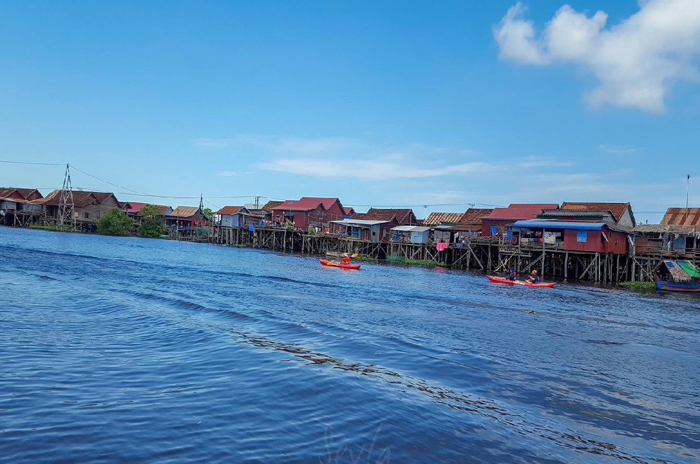
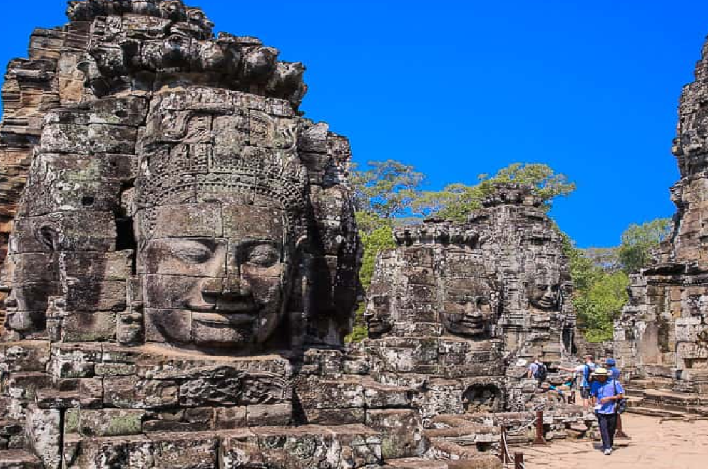

Boeung Tonle Sap Commune Tourism Community, 3 km from Siem Reap, is a consultant for ecotourism, restaurants and international tourism. The people of Kampong Khleang community are engaged in fishing in both the rainy and dry seasons, while the cultivation is practiced in the dry season. Kampong Khleang commune is located in Sot Nikum district, Siem Reap province.Divided into 10 villages, such as Prek Sramoch village, Dauntey, Spean Veng, Tour Sor, Kampong Khleang market, under Kampong Khleang Leu market, both Chamkar Yuon, Toul Ta Chet and Chong Srok villages.

A playground for locals, Phnom Kulen (literally Mountain of the Lychees) is a gorgeous day out. The main attraction is the waterfalls at the top of Kulen Mountain and it’s also a great picnic spot; well set up in Cambodian style with hammocks and shelters to keep you shaded from the sun. It’s around 1.5-2 hours drive from Siem Reap and if you go all the way to the top by van or car, you need to get there early, as the road is one-way traffic only.

Bayon is an ancient temple in the center of Angkor Thom, Cambodia. It was the last temple built at Angkor. The temple is famous for its smiling faces. Bayon was built as the state temple of the King Jayavarman VII, a king of the Khmer Empire from 1181 to 1218. He was strongly devoted to Buddhism and built the Bayon as a result of his devotion. The Bayon was the last temple built at Angkor. Numerous smiling faces are depicted on the towers of the Bayon, making this temple distinctively different from the others in the area.
